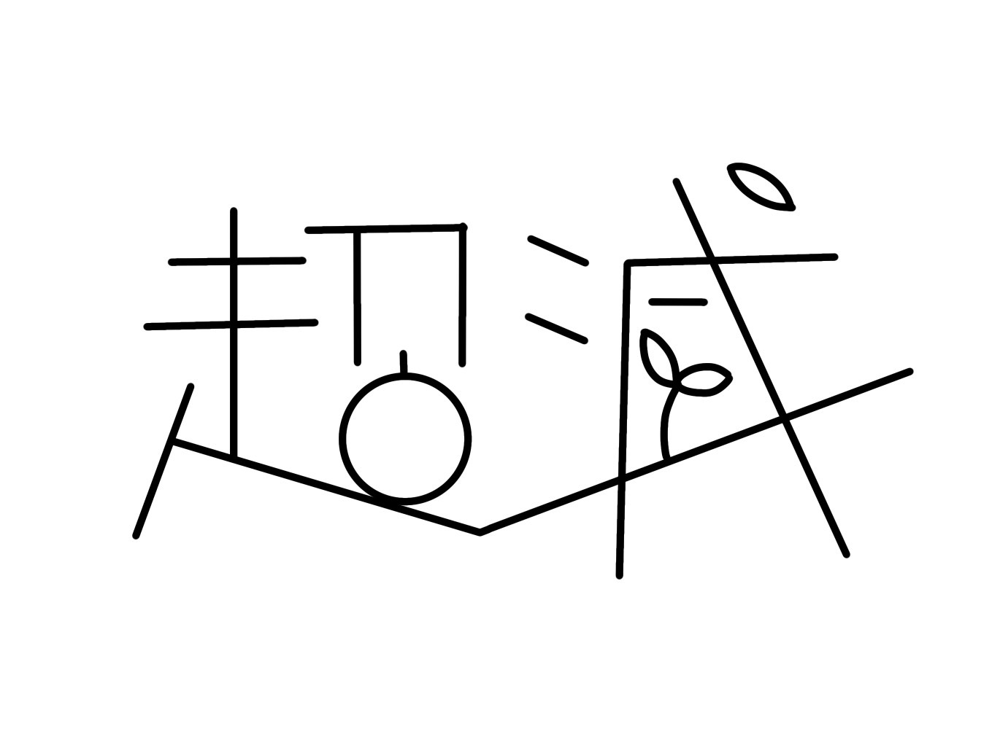
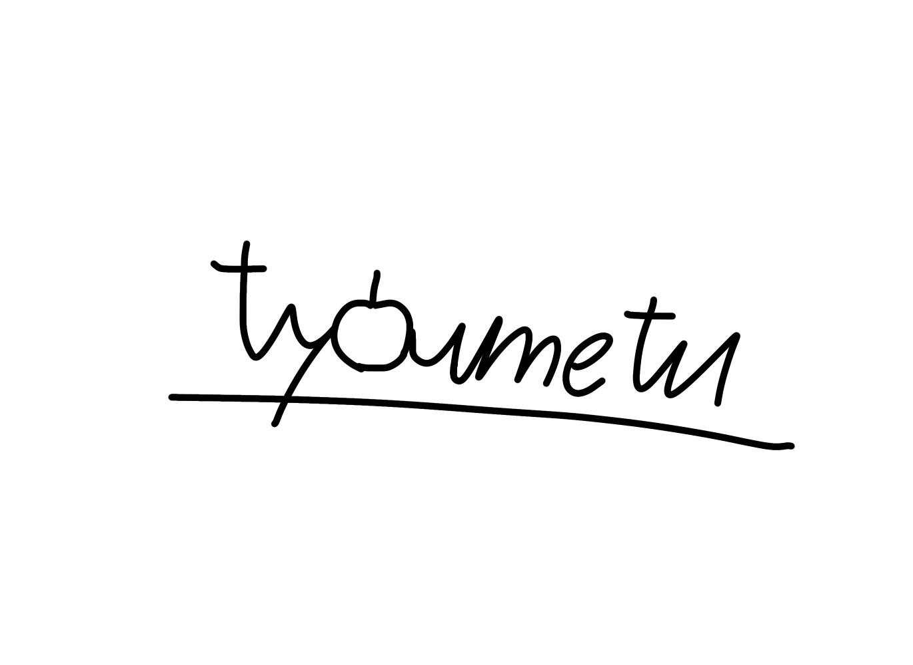

ガイドライン
ガイドライン掲載しときます
画像の使用は許可制です。
事前に許可をとり、使用していくパターンとします(そのままで使用 AI学習禁止)。
使用した時は必ず引用をしてください(うっかり無断で使用してたとしても引用先が書いてあれば大目に見ます ただしサインは消さないこと)。
創作を悪い意味で誤解させる内容(例えば風刺的な内容や人種や男女差別を彷彿とさせる内容だったり過度なエログロの内容)だったり、ヘイト創作は厳禁(見つけ次第通報 キャラクターに不満を感じたら創作では無く私に言ってください)。
軽い流血表現は許します。
ポリコレは受け付けてません。
無断転載は見つけ次第通報(引用先が書いてない場合 AI学習も含む)。
リツイートは引用先無しでもOKとする。
画像のダウンロードは有料で100円とります。
これは公正に交渉した証とするためです(お金が欲しいからという訳ではありません)。
勝手に無賃でダウンロードした人は見つけ次第強制で100円払ってもらうか、ダウンロードしたイラストを消してもらいます。
↓このサインがあれば、私の著作物と思ってください

